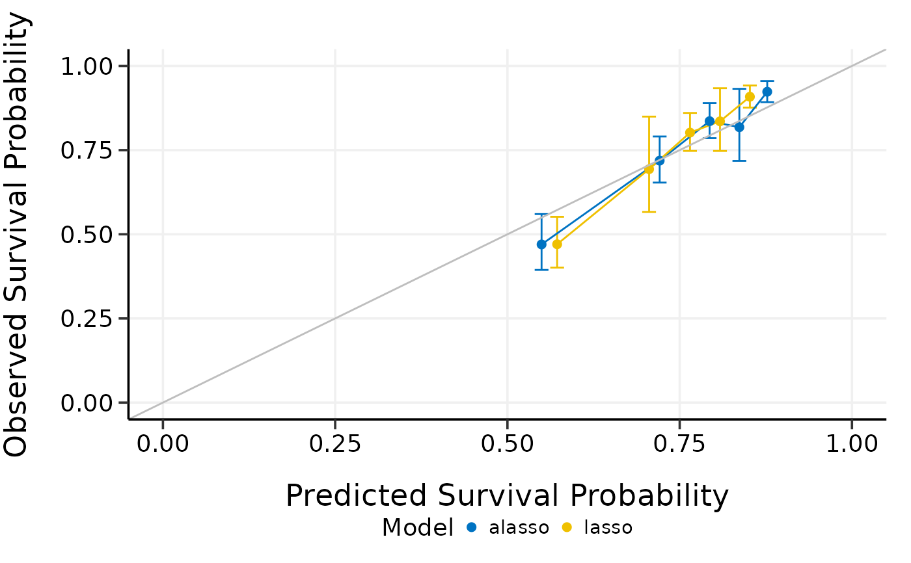

Compare high-dimensional Cox models by model calibration
Source:R/5_3_compare_by_calibrate.R
compare_by_calibrate.RdCompare high-dimensional Cox models by model calibration
Usage
compare_by_calibrate(
x,
time,
event,
model.type = c("lasso", "alasso", "flasso", "enet", "aenet", "mcp", "mnet", "scad",
"snet"),
method = c("fitting", "bootstrap", "cv", "repeated.cv"),
boot.times = NULL,
nfolds = NULL,
rep.times = NULL,
pred.at,
ngroup = 5,
rule = c("lambda.min", "lambda.1se"),
seed = 1001,
trace = TRUE
)Arguments
- x
Matrix of training data used for fitting the model; on which to run the calibration.
- time
Survival time. Must be of the same length with the number of rows as
x.- event
Status indicator, normally 0 = alive, 1 = dead. Must be of the same length with the number of rows as
x.- model.type
Model types to compare. Could be at least two of
"lasso","alasso","flasso","enet","aenet","mcp","mnet","scad", or"snet".- method
Calibration method. Could be
"bootstrap","cv", or"repeated.cv".- boot.times
Number of repetitions for bootstrap.
- nfolds
Number of folds for cross-validation and repeated cross-validation.
- rep.times
Number of repeated times for repeated cross-validation.
- pred.at
Time point at which calibration should take place.
- ngroup
Number of groups to be formed for calibration.
- rule
Model selection criterion for glmnet models, `"lambda.min"` or `"lambda.1se"`. Defaults to `"lambda.min"`.
- seed
A random seed for cross-validation fold division.
- trace
Logical. Output the calibration progress or not. Default is
TRUE.
Examples
data(smart)
x <- as.matrix(smart[, -c(1, 2)])
time <- smart$TEVENT
event <- smart$EVENT
# Compare lasso and adaptive lasso by 5-fold cross-validation
cmp.cal.cv <- compare_by_calibrate(
x, time, event,
model.type = c("lasso", "alasso"),
method = "fitting",
pred.at = 365 * 9, ngroup = 5, seed = 1001
)
#> Starting model 1 : lasso
#> Start fitting ...
#> Starting model 2 : alasso
#> Start fitting ...
print(cmp.cal.cv)
#> High-Dimensional Cox Model Calibration Object
#> Random seed: 1001
#> Calibration method: fitting
#> Model type: lasso
#> glmnet model alpha: 1
#> glmnet model lambda: 0.002767573
#> glmnet model penalty factor: not specified
#> Calibration time point: 3285
#> Number of groups formed for calibration: 5
#>
#> High-Dimensional Cox Model Calibration Object
#> Random seed: 1001
#> Calibration method: fitting
#> Model type: alasso
#> glmnet model alpha: 1
#> glmnet model lambda: 0.001769366
#> glmnet model penalty factor: specified
#> Calibration time point: 3285
#> Number of groups formed for calibration: 5
#>
summary(cmp.cal.cv)
#> Model type: lasso
#> Calibration Summary Table
#> Predicted Observed Lower 95% Upper 95%
#> 1 0.5420008 0.4469568 0.3681894 0.5425751
#> 2 0.7165334 0.7567249 0.6955663 0.8232608
#> 3 0.7901613 0.7870803 0.7124101 0.8695768
#> 4 0.8408859 0.8919718 0.8514594 0.9344117
#> 5 0.8894957 0.9228286 0.8912396 0.9555373
#>
#> Model type: alasso
#> Calibration Summary Table
#> Predicted Observed Lower 95% Upper 95%
#> 1 0.5343091 0.4483935 0.3676640 0.5468490
#> 2 0.7242445 0.7489438 0.6896464 0.8133396
#> 3 0.8011894 0.8030839 0.7253344 0.8891673
#> 4 0.8515505 0.8872493 0.8446693 0.9319758
#> 5 0.8996483 0.9225448 0.8903529 0.9559006
#>
plot(cmp.cal.cv)
